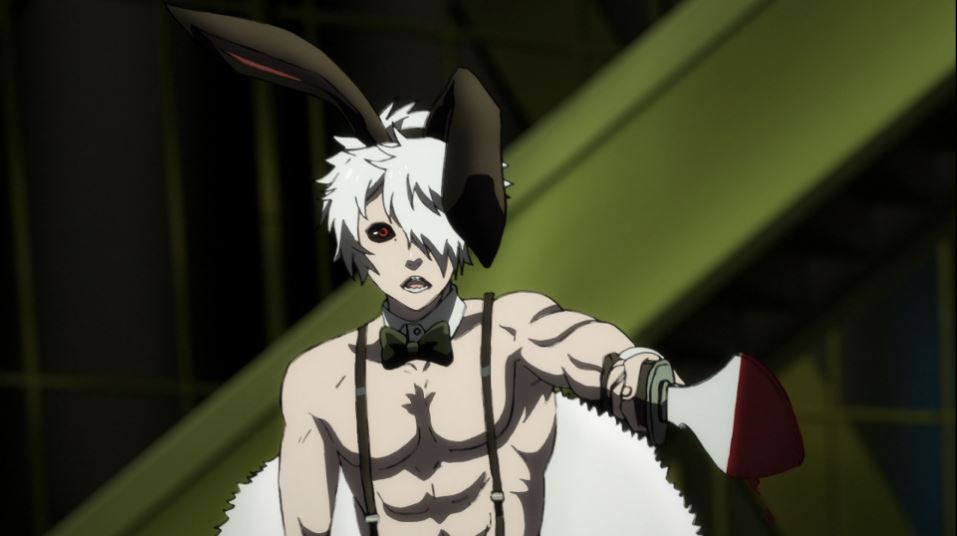

2017's "Juni Taisen - Zodiac War" is a "Battle-Royale"-style story, in the vein of the Japanese live-action film "Battle Royale" and anime like 'The Future Diary" or "Fate - Stay Night" or even American films like "The Hunger Games." It's not as novel as it used to be to violently pit people against each other to the death, until only one remains to win a prize, a wish, or freedom. In this case, the most novel part is that the show is based on a novel by NisiOisiN, one of Japan's most popular contemporary writers, best known for works adapted into anime like "Bakemonogatari." His unique writing style makes for some unusual anime; of the few works adapted into anime, most of them are stuck with expensive licensors (looking at you, Aniplex USA), so Funimation's release of "Zodiac War" might be the easiest animated entry point for the average viewer.The concept is inspired: in a regular event (taking place every 12 years), 12 human "warriors" are chosen to fight to the death in a deserted modern-Tokyo, with the winner getting "any wish" as their prize. Each warrior represents one of the animals of the Chinese zodiac, and are nicknamed accordingly ("Dragon," "Tiger," "Horse," "Chicken," "Monkey," etc.). And each one is enhanced to have supernatural abilities, be it through scientific experimentation, mutation, extreme training, or pure madness, with the public recognizing them explicitly as "warriors" rather than simply human. One character can communicate with birds, for example, and another can fly. Others simply like killing, with expertise with swords or bombs. An eccentric bunch, for sure. The 12-episode series progresses, starting minutes before the contest begins, and ending with an episode dedicated to the winner and their wish. Each episode, generally, also focuses on a single fighter, revealing their backstory, how they came to be here, and why they are fighting.I remember Funimation streaming the show with a "broadcast English dub," within days of when Japan saw the episodes on television. I also remember viewers not being particularly impressed. The inspiration is taken a bit too literaly, and if you happen to know the listed order for the zodiac animals, then you already know who will get killed off and when. The show even recognizes this, with characters referring to the original fable and the coincidence to how things play out here (despite references that past "Juni Taisen" games didn't follow this destiny so closely). Even if you were ignorant of the source fable, the episode titles give away which character's backstory will be focused on next, and with an almost consistent "one character killed per episode," it's easy to guess who's next to die in the episode preview, a full 20 minutes before it happens if you're binge-watching. The circumstances about HOW characters die is also unfullfilling. Most of the characters have strategies for how to be the last one standing, ranging from teaming up early with other players, to setting up traps, to tricking others to let their guard down, and so on. But ultimately, most characters die when they least expect it, often with just a simple stab or slice. There are few epic battles between these God-like beings, with confrontations over in seconds, and the best-laid-plans not even set, let alone carried out. It can be fun in a way to see a character die minutes after they think they're bound to win everything, but too often, I kept thinking to myself "... that's it?". If there is little mystery to who will win, and if how they win isn't satisfying, then is there any reason to watch "Zodiac War?" Sure there is. The characters are so bizarre, that it's captivating to hear their respective backstories. A lot is left unanswered here, unfortunately: I'd love to know how society treated the heroes outside of this traditional battle, or learn more about the all-seeing spectators that bet fortunes and countries on the outcome, or learn ANYTHING about "Rabbit," the one participant we don't learn much about. Even so, what is provided is fascinating and excites the imagination. I'd argue "Zodiac War" is a well-written and well-structured story, even if it deliberately gives too much away and not enough of what the viewer wants most. The final episode too, which gives a big twist into who wins, how, and what they'll wish for, was when I was most captivated, even though it was also largely a letdown. So... I'm not certain how to sell "Zodiac War." Maybe if you like murderous madmen hunting each other down like monsters with over-the-top violence, you'll get a thrill here?"Juni Taisen - Zodiac War" was animated by Graphinica, a studio that has done a variety of work, but seemingly prefers 3D CGI, even though most of their work is based in traditional 2D anime. There's a strong sense of that conflict in this show, but it mostly works out from an animation review. I think most of the scenes rely on 3D CGI models with animators tracing over them (or at least using heavy generated ink-outlines) to create the show's look while maintaining a good, grounded quality of movement, and for it, the show looks more extravagent than your average anime, if only just. I thought there was originally more CGI in the broadcast, but barely noticed any in the Bluray release, thanks to the aforementioned clean-up blending the two (episode 9 is the only outlier, where a long action sequence is entirely CGI). I even liked the rough ink-outlines, giving the show a personality. I'd put this on par with Production I.G and their work on things like "Ghost in the Shell - Stand Alone Complex." Comparing the a show that came out almost two decades prior doesn't sound like a compliment, but it is.The show's visual design is also... unique. Each character has some design trait inspired by their animal persona, from boar's horns on their head, to a chicken-like bikini, to a matador-like outfit for "Ox." "Rabbit" stands out the most, a pale, muscular man wearing a black bikini bottom, suspenders, high heels, and nothing else, a design that would give all variety of dreams and nightmares upon witnessing. Distinct doesn't always mean "good," but I'll agree that both the visual design and animation are above-par for television anime, if only barely, and that those production values are important to convey the epic-ness of the story. Otherwise, the English dub and music are both fairly lackluster, but acceptable.There's a bit of NisiOisin's bizarre traits for large casts of characters in "Juni Taisen - Zodiac War," but it doesn't really compare to some of his other works ("Bakemonogatari" being the most obvious one to watch instead). It seems to think it's more epic, profound and clever than it really is, to its detriment. It's still a fine action anime, but within anime, there's a lot of competition in the over-crowded action genre. "Zodiac War" isn't the first that'd be knocked out, but it certainly wouldn't make it to the final few.
- "Ani" More reviews can be found at : https://2danicritic.github.io/ Previous review: review_Jujutsu_Kaisen_0 Next review: review_K